Cannon查看日志
为了方便调试代码，本文用以说明如何通过小钢炮输出日志。
串口日志¶
1. 软件配置¶
打开工程配置窗口，将条件编译栏的空定义NO_PRINTF去掉。
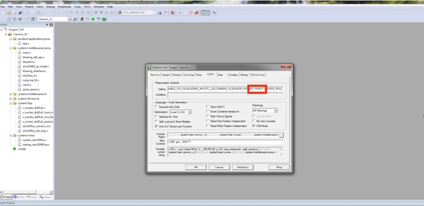
2. 硬件配置¶
小钢炮上串口的硬件接口如下，分别对应串口的3V3、RX、TX、GND四个引脚：
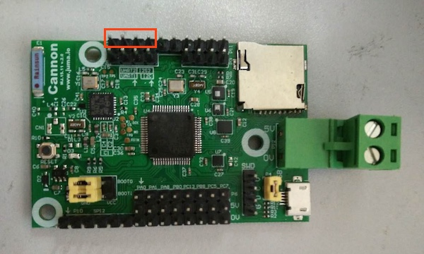
您也可以通过原理图，查看详细信息(x:/documents/cannon_v2/Cannon_V2_SCH.pdf)：
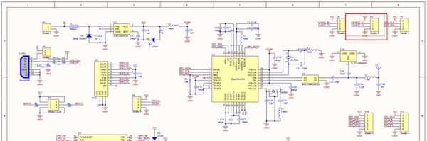
3. 示例¶
在代码中加入printf：
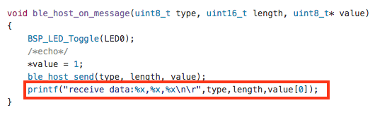
通过电脑上的串口调试查看日志，波特率设置为115200bps、无校验位：
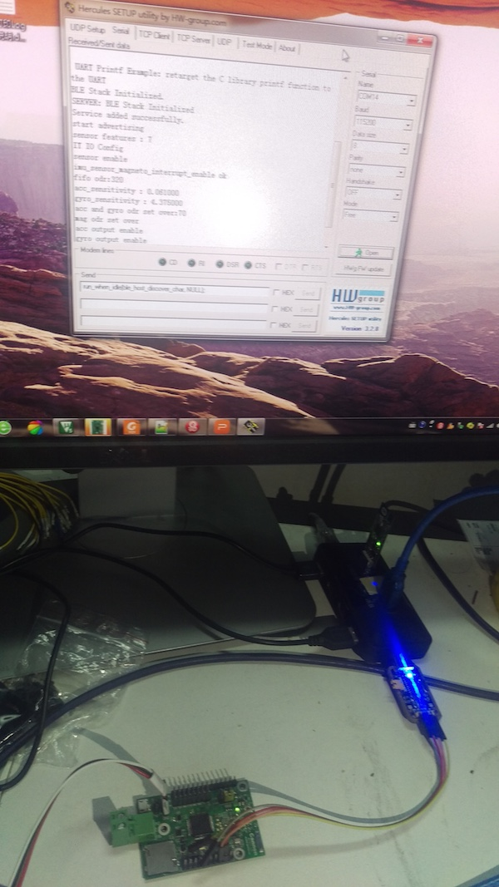
BLE调试助手日志¶
1. 下载&安装BLE调试助手APP¶
为了方便调试嵌入式代码，我们提供了手机端的BLE(低功耗蓝牙)调试助手，可以实现手机和设备之间原始数据的收发。现在您可以从Appstore、应用宝等应用市场直接下载，或者自行编译源码。
(1) 应用市场下载安装¶
- iOS版本: BLE调试助手_AppStore
- Android版本: BLE调试助手_应用宝
在您的手机上，打开Appstore、应用宝等应用市场，搜索“BLE调试助手”便可找到。
(2) 源码编译安装¶
- iOS版本: BLE调试助手_iOS_Github
- Android版本: BLE调试助手_Android_Github
(4) Android手机直接安装APK文件¶
如果您使用Android手机，可以直接安装BLE调试助手的APK文件。打包下载好github上的文件后，APK文件位于：
X:\STM32_Platform\tools\JumaBleHelper.apk

如果您不知道如果将APK安装至手机，请参阅这篇文章哦。
2. 使用说明¶
以Android版的BLE调试助手为例，说明操作步骤，iOS版本的操作雷同。
(1) 搜索设备¶
点击“SCAN”用于搜索周围的BLE设备。
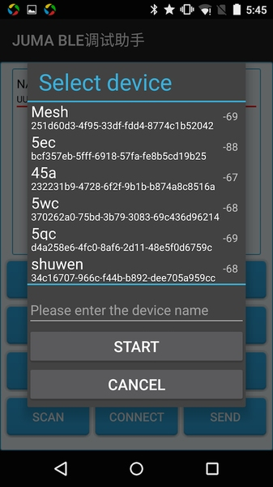
需要注意的是，BLE调试助手的通过service UUID过滤出使用JUMA SDK的设备：
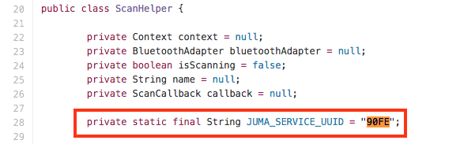
这部分的代码参见：
Android BLE SDK：https://github.com/JUMA-IO/BLE_SDK_Android
iOS BLE SDK：https://github.com/JUMA-IO/BLE_SDK_iOS
(2) 选择设备¶
点击“SCAN”对话框中的某个设备，之后的操作都针对该设备。
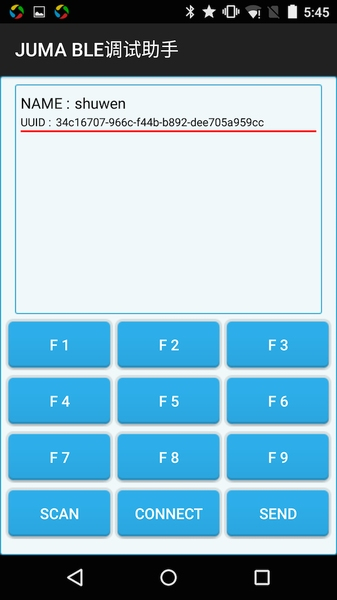
(3) 建立BLE连接¶
点击“CONNECT”，和该设备建立起BLE连接，APP会显示日志信息：
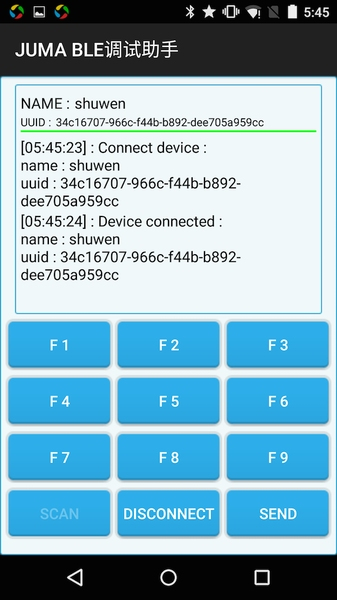
(4) 编辑发送数据¶
点击“SEND”，用于编辑发送的数据，Type为“0x09”。
F1、F2~F9为快捷按钮，长按可以用于编辑发送数据，Type为“0x00”、“0x01”~“0x08”。
- 所有编辑的数据均为十六进制数值，您不用在前面加“0x”前缀。
- 收发数据的编码符合TLV格式，即Tyep、Length、Value，定义参见这里。
APP端的代码实现参见这里，发送部分的关键代码为：
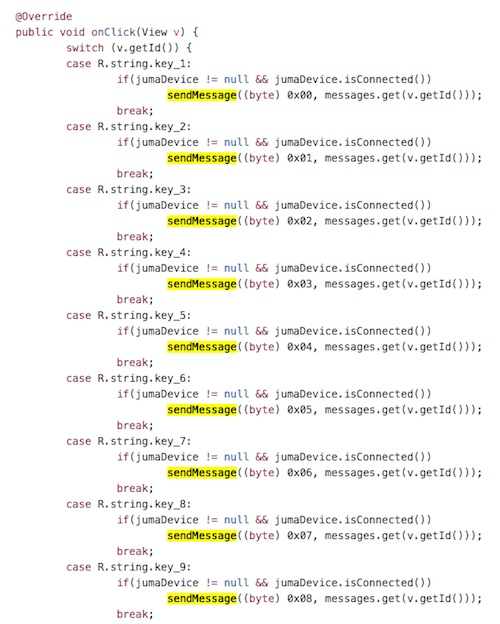
(5) 查看收发数据¶
您编辑的发送数据，和从设备收到的数据，都会显示在APP上方的日志区域：
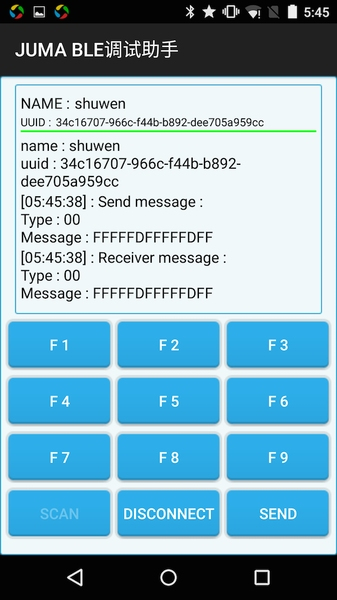
(6) 断开BLE连接¶
最终，点击“DISCONNECT”以断开和设备之间的连接：
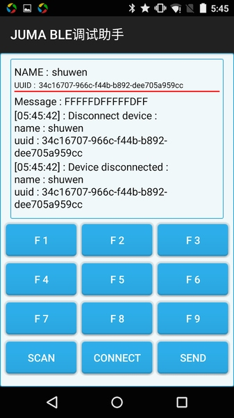